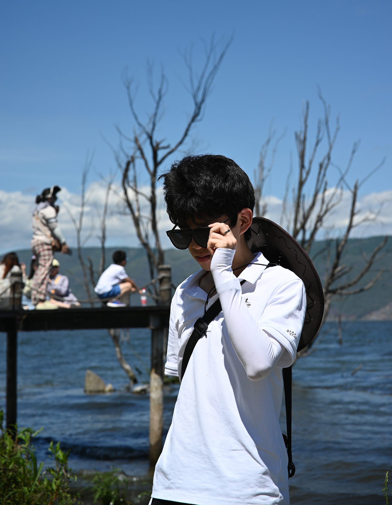

|  |
I'm a Ph.D. student in
Institute for Interdisciplinary Information Sciences
(IIIS),
Tsinghua University
advised by
Prof. Mingyu Gao.
Previously I received my my B.Eng. in Computer Science from ACM Honors Class, Shanghai Jiao Tong University. During my undergraduate years, I had a wonderful time working with Yuqing Yang @ System Group of Microsoft Research Asia, focusing on LLM serving; and Tianqi Chen @ Apache TVM community, doing research on Deep Learning Compilers. Please check out my CV if interested. I go by `SiriusNEO` on most websites. And I usually use `Chaos` as a variant of my real name. |
My research interest mainly lies in computer systems and architecture, specially in optimizing machine learning (MLSys) and other data intensive applications. You can check my [Publications] / [Projects] for details.
Github: @SiriusNEO
Zhihu: @SiriusNEO